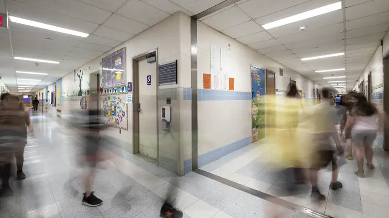
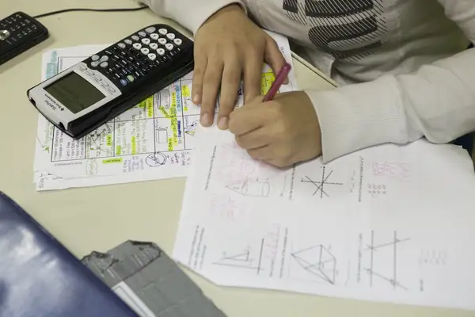

A free public school for kindergarten to grade 8 in Lawrence
Admission is by lottery, with no tuition and no test. Applications for 2027‑28 close Monday, March 1, at 5 PM.
Apply for 2027‑28Call (978) 555-0136 or text us.

This week
Bus 4 runs 10 minutes late until Friday (road work).
Lunch today: baked chicken or mac and cheese.
No school Wednesday, Nov 11, for Veterans Day.
Front office open 7:30 AM to 4 PM.
Family directory
For families who already attend: the things people ask the front office for most.
- Report an absenceText (978) 555-0138 before 9 AM
- Bus routesStops and pickup times
- Lunch menuThis week, free for every student
- CalendarNo school Wed, Nov 11
- Parent portalGrades and attendance
- UniformsNavy and white. The first set is free
- Text alertsDelays and closings on your phone
- Front office(978) 555-0136
Applications for 2027‑28 close Monday, March 1, 5 PM
116 days left to apply.
It is free and there is no test. Every child who applies by the deadline has the same chance in the lottery.
How it works (sample dates)
- Nov 2 to Mar 11. Apply
Online, on paper at the front office, or by phone with us. It takes about 10 minutes, in any of our four languages.
- Thu, Mar 4, 6 PM2. Public lottery
A public drawing in the school gym, also shown live online. You do not have to be there.
- By Fri, Mar 123. Answers
We call, text and email every family: a seat, or a place on the waitlist.
- By Fri, Mar 264. Register
Accept your seat and bring proof of age and address. We help with every form.
Brothers and sisters of current students are drawn first, then Lawrence residents (sample rules).
To apply you need
- Your child's name and date of birth
- Your address
- A phone number
No documents and no fee to apply.
Apply for 2027‑28Questions? Call (978) 555-0136.

This week's lunch
Mon, Nov 2 to Fri, Nov 6
Breakfast and lunch are free for every student.
| Day | Lunch | Vegetarian |
|---|---|---|
| Mon 2 | Chicken and rice with red beansBroccoli, orange slices | Rice and red beans with cheese |
| Tue 3 | Cheese pizzaGarden salad, apple | Cheese pizza |
| Wed 4 | Beef tacos on corn tortillasPico de gallo, corn | Black bean tacos |
| Thu 5Today | Baked chicken, mashed potatoesGreen beans, whole-wheat roll | Baked mac and cheese |
| Fri 6 | Pasta with meat sauceCaesar salad, grapes | Pasta with tomato sauce |
Milk comes with every meal. The menu can change. Tell the office about allergies.
Coming up
- Thu, Nov 5Bus 4 pickups run 10 minutes late through Friday (road work)
- Wed, Nov 11No school: Veterans Day
- Thu, Nov 12Family night: how to read a report card. 6 PM, with interpreters in all 4 languages
- Wed, Nov 25Early release at 12:15 PM
- Nov 26-27No school: Thanksgiving